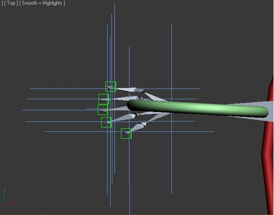

Tutorials
Body Bones, IK, Helpers & Controllers
For walking, the above configuration will be most appropriate and easy to set up. Notice a single spine, there is a nub which is concealed at the base of the spine, which is connected to the thighs and finally linked with the hip controler. There is no IK at the base of the spine. There is no IK between spine base nub and left/right pelvis bone. There is no IK between thigh and knee bones. There are nubs at the end of both thighs without any IK or connectors, There are nubs at the end of both calf bones, which are connected to the thighs by an IK link. The ankle bones are connected to the ankle nubs by IK link for rotation of foot. Both calf nub IK and ankle nub IKs are connected to the respective foot controlers. There is no neck bone, just a single head bone perched by a nub at the top. The concealed nub at the base of the spine is linked to the head bone (not the head nub) at the beginning point between right and left clavicles. The head bone is linked to the apex nub with an IK, which is linked to a helper which acts as the head controler. There is no IK required from the right/left clavicle to the right/left upper arms. There is an HI solver (the defaut choice IK) applied from the respective upper arms to the respective forearm nubs. There is no nub joining the upper arm to the forearm, if elbow movement is required then a nub maybe made in between and an IK from the clavicle maybe attached to it and then a controler maybe linked to it in the mid arm. Similarly, if a knee controler is required an HI solver can be attached from the pelvis to the knee nub. The knee nub in this case was not attached to any IK or a controler as for simple walking it is not that required. The knee nubs and elbow nubs might not be necessary for a basic walk animation but such joints and controlers maybe required for better control to achieve more complicated, intricate and elaborate limb movements.

In the hand set up, note the palms are facing downwards towards the bottom. There are two main parts of five finger joints. Let us call the first part Finger 1 & second part Finger 2. At the end of both parts of fingers, there are nubs which maybe called Finger 1 nub and Finger 2 nub. In the above image, the hand controler is concealing a forearm nub which has been attached to the upper arm bone via an HI Solver (the order is from upper arm bone to forearm nub). The hand controler is linked to the forearm nub IK by clicking on Select and Link then dragging from from the forearm nub IK to the hand controler (note the order of the Link is important). Observe that on each finger there is only one IK at the end, which is an HI Solver joining Finger 2 to Finger 2 Nub. Five helpers are to be made over each finger tip surrounding the respective Finger 2 Nubs. First step in linking the helpers to the fingers is to Select and Link then click on the Helper first then drag to the Finger 1 Nub. Now, check the connection by dragging the Finger 1 Nub and see if the Helper moves along with the Finger (note the order of the Link is important). Now, click on Select and Link then drag the mouse pointer over the Finger Nub IK then a long left-click releasing on the Helper (Link is indicated by the box turning white for a moment). Now move the Helper and check if Finger 2 and Finger 2 Nub move. Also check by moving the Hand Controler if the Finger IKs, Helpers, Nubs and all bones move in cohesion with the arm and nothing gets left behind. There is no need for any link of the Finger Helpers with the Hand Controller unless artistic movements are required. In the above set-up twist and rotating the hands will not be possible as it is not required in simple walking movements. However, if hand rotation is required, then do link the Finger Helpers with the Hand Controller. In this case, Helpers might also be required over an IK from Finger 1 to Finger 1 Nub which is to be attached and then such mid-finger Helpers are to be linked to the Hand Controler. So, for rotation of hands helpers are required for both Finger Nubs and each of these Helpers are to be Linked with the Hand Controler. Now, rotating the perpendicular axis of the Hand Controler (in Front Viewport) will also rotate the Fingers in cohesion. In such cases, more effort will be required during Skinning.